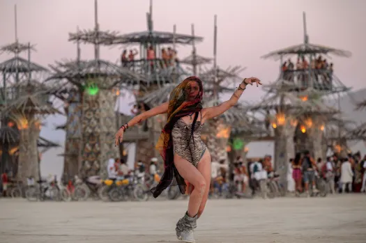

Entrada diccionario:Festival

Festi`val
festival sustantivo
1:Fiesta, especialmente musical. fiesta, espectáculo, certamen, velada, función, concurso, muestra.
2:Conjunto de actuaciones o representaciones dedicadas a un arte determinado, celebradas gralm. durante varios días y de manera periódica, a veces con entrega final de premios.